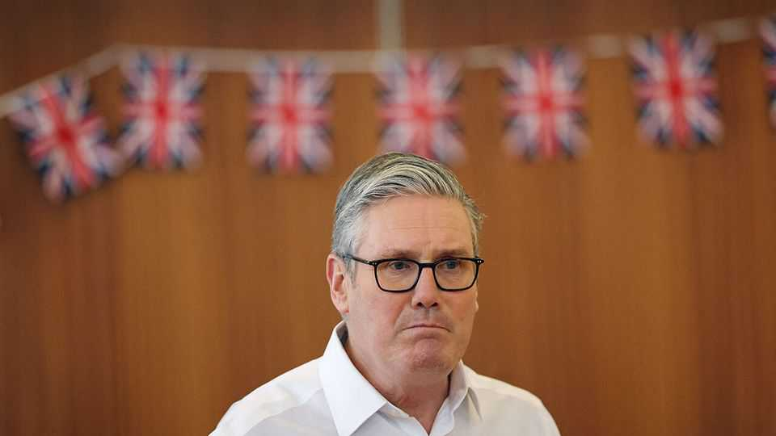

The world this week
Politics
February 12th 2026

Japan’s Liberal Democratic Party won a big victory at a snap general election, taking two-thirds of the seats in the lower house of parliament to give it a supermajority. The centre-left and parties further to the left were crushed at the poll. Takaichi Sanae had called the election to give her a fresh mandate after becoming prime minister at a leadership contest last October. She has pledged to cut the consumption tax on food, which was a big issue with voters, and to bolster the armed forces, a vote-winner during Japan’s current tensions with China. Japan’s stockmarkets hit new records and the yen soared after her emphatic win.
An election in Thailand produced a surprise result, when the Thai Pride Party (BJT) won the poll with around 40% of the seats, the biggest margin of victory in 15 years. The BJT is the party of the military-royalist establishment; its victory marks the first outright win for conservatives in Thailand this century. Anutin Charnvirakul, who was elevated to the office of prime minister last September amid a period of political turmoil, now gets to form a new government in coalition with other conservative parties.
Bangladesh held an election, the first since 2024, when the poll was rigged in favour of the Awami League. Widespread student protests later that year forced Sheikh Hasina, the prime minister at the time, into exile and the party was banned from taking part in this year’s election. The results are expected on February 13th.
Security officers in Pakistan arrested four people in connection with the suicide-bombing of a Shia mosque in Islamabad that killed 32 people and wounded 160 others. It was the worst act of terrorism in the capital in over a decade. The interior minister said one of the suspects under arrest was an Afghan citizen who had planned the bombing.
The High Court in Hong Kong sentenced Jimmy Lai, a newspaper publisher and pro-democracy supporter, to 20 years in prison. He was found guilty in December of conspiring to collude with a foreign power and of conspiring to publish seditious materials. The sentence was widely condemned. Marco Rubio, America’s secretary of state, described it as “unjust”. The UN said it was incompatible with international law. In a document released after Mr Lai’s sentence, China said stability was being undermined by “anti-China agitators in Hong Kong and hostile external forces”.
Abbas Araghchi, the Iranian foreign minister, said that indirect talks in Oman with America were off to a “good beginning”. Donald Trump said Iran wanted to make a deal “very badly” and that another round of negotiations would follow, but no date had been set. Adding to the pressure on Iran America is reportedly preparing to send a second aircraft-carrier to the region. Binyamin Netanyahu, Israel’s prime minister, discussed Iran with Mr Trump during his visit to the White House.
Iranian authorities arrested leading opposition figures, including Azar Mansouri, the head of the main reformist coalition. The prosecutors’ office accused them of “targeting national unity” and colluding with America and Israel. The arrests form part of a wider crackdown on dissent in the wake of huge anti-government protests in January.
Indonesia pledged to send 8,000 soldiers to Gaza as part of the International Stabilisation Force that is tasked, among other things, with disarming Hamas. The Indonesian army’s chief of staff said the troops would focus on medical and engineering roles.
Israel’s security cabinet approved new measures to expand Israeli control over the West Bank. They would make it easier for Jewish settlers to take over Palestinian land and increase Israeli authority over the Cave of the Patriarchs, a holy place for Jews, Muslims and Christians. Bezalel Smotrich, the far-right finance minister, said: “We will continue to kill the idea of a Palestinian state.”
Ethiopia’s army began moving large numbers of troops and a lot of heavy weaponry towards the northern region of Tigray, prompting fears that it may be about to launch a major military offensive. This followed the most extensive clashes between the Ethiopian army and forces loyal to Tigray’s ruling party since the 2020-22 civil war. Ethiopia accuses neighbouring Eritrea of arming Tigrayan forces. Eritrea says Ethiopia is stirring the pot. The risk of all-out war is rising.
A shooter attacked a school in a remote part of Canada, killing an adult and five children. The perpetrator’s mother and step-brother were found dead nearby. The suspect, whom the police described as a biological male who identified as female, committed suicide.

Sir Keir Starmer, Britain’s prime minister, spent the week clinging to his job as more revelations about Peter Mandelson’s relationship with Jeffrey Epstein, a deceased sex offender, came back to haunt him. Sir Keir was forced to admit he had known about Lord Mandelson’s continued friendship with Epstein before appointing him as ambassador to America (he was sacked last September). Morgan McSweeney resigned as Sir Keir’s chief of staff. Despite the worst poll-rating ever for a prime minister he has survived, for now. Local elections in May could bring fresh peril.
The White House described Donald Trump’s plan to repeal the legal rule that underpins the government’s ability to curb greenhouse-gas emissions as “the largest deregulatory action in American history”. The “endangerment finding” was adopted in 2009 and states that global warming is a threat to public health, giving the government the legal power to regulate car emissions and require reporting on emissions standards. Green groups will challenge the plan to scrap it in court.
Gallup decided to stop tracking presidential approval ratings, after almost 90 years of issuing the surveys. It wants to “focus on public research and thought leadership”.
Authorities in Russia arrested three suspects in relation to the shooting and wounding of the second-highest-ranking officer in the GRU, the country’s military-intelligence agency. Lieutenant General Vladimir Alexeyev was shot at a block of flats in suburban Moscow. Russia claims the man who carried out the attack is a Russian citizen who was born in Ukraine. He was swiftly extradited from the United Arab Emirates, where he had fled immediately after the shooting.
Police clashed with protesters in Tirana, the capital of Albania, as they called for the resignation of the deputy prime minister over claims of corruption. The allegations have rocked the government led by Edi Rama, who has been prime minister since 2013.
Juan Pablo Guanipa, a prominent opposition politician in Venezuela, was placed under house arrest just hours after his release from prison, though the authorities provided no evidence that he had breached the terms of his release. The post-Maduro government has released 426 political prisoners since early January, according to Foro Penal, a human-rights group. Hundreds remain behind bars.
America’s secretary of war, Pete Hegseth, said that armed forces had chased a tanker transporting Venezuelan oil from the Caribbean and boarded it in the Indian Ocean. America has been intercepting vessels that violate sanctions on Venezuela. Meanwhile, the American military attacked another boat in the eastern Pacific suspected of trafficking drugs, killing two people.
Cuba announced plans to ration fuel in response to America’s policy of curbing oil supplies to the country, notably from Venezuela and Mexico. Amid warnings that Cuba is running out of aviation fuel Canadian airlines suspended flights to Havana. The Kremlin said it was looking at ways to aid Cuba, describing the energy situation as “critical”. It neglected to mention the suffering Russia has caused by bombarding Ukraine’s energy infrastructure.